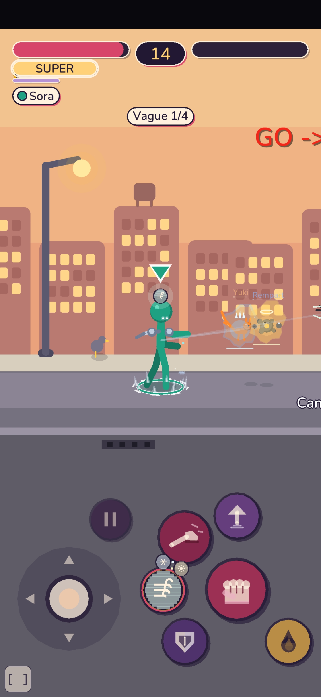
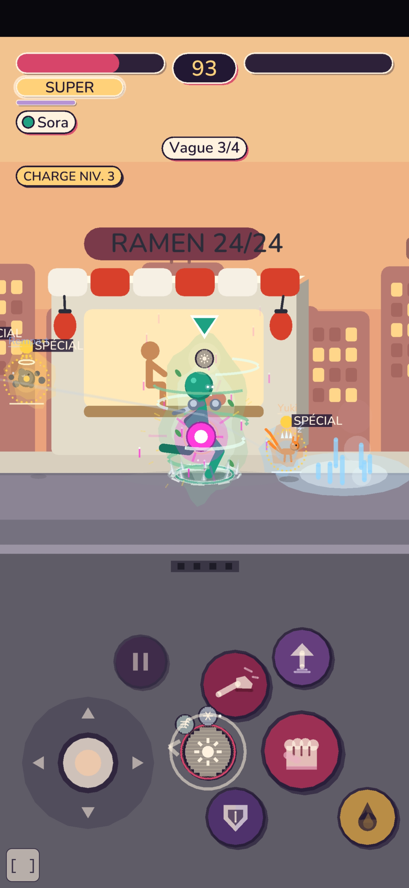
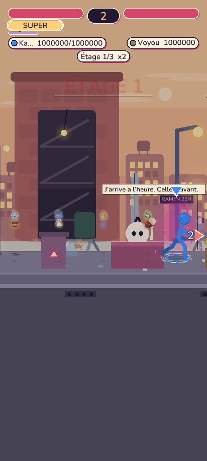
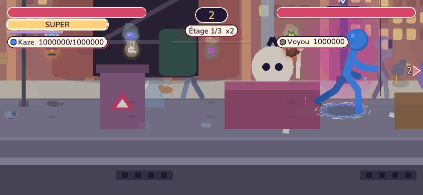
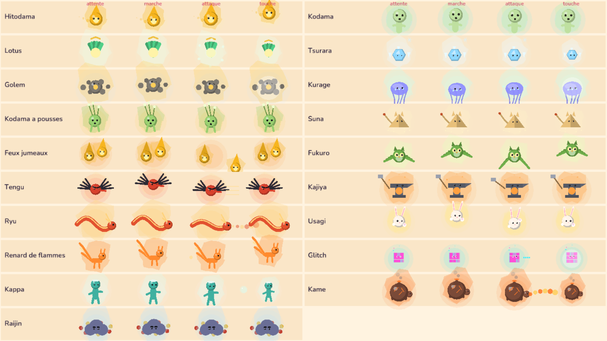

Daemons plus petits, avec du caractère
Rendu seulement : la simulation, l'empreinte et le protocole ne changent pas. Captures du vrai moteur.
Avant (retour du téléphone, 412x915)


Après (vrai moteur)


Planche contact des 19 daemons : attente, marche, attaque, touché

Chaque espèce a une attente, une démarche, une réaction quand son héros est touché, un signe d'humeur, une échelle de silhouette et une aura de sa couleur (au moins 5 traits propres ; test automatique).
Ce qui change
- Lien héros-daemon : fil de 1 px presque transparent, seulement quand le daemon est loin.
- Pastille du pouvoir : sous les pieds du héros (anneau au sol), plus sur la tête.
- Bouton Super : plaque + glyphe, recharge en anneau fin, une seule petite pastille.
- Plus de noms ni d'étiquettes « SPÉCIAL » sur les daemons ; les noms d'attaques de boss restent.